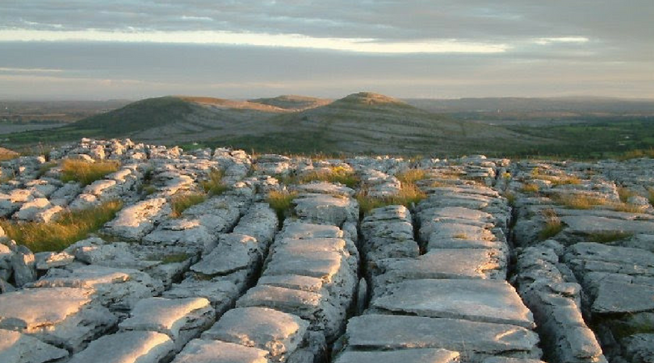

Sight Seeing Tours
Our partners, The Galway Tour Company and Lally Tours, will pick you up directly from our doorstep in the morning and bring you safely back to the B&B in the evening; so all you have to do is choose your tours!
Connemara, Cong and Kylemore Abbey
This tour brings you through Connemara where you can see the beautiful cliffs and lakes where Celtic Kings and Queens lived, breathed, fought and died. The tour also stops off at the village of Cong, aand Kylemore Abbey, where you can experience the tranquility felt by the monks of times past.
- The Galway tour company offer a tour through the area.
- For more information check out the Burren Centre Website: www.theburrencentre.ie
The Aran Islands and the Cliffs Cruise
This tour brings you on a ferry across the bay towards the Aran Islands. Situated off the west coast of Ireland and surrounded by the Atlantic sea, the islands are a vestibule of island culture. See traditional basket weaving on the stone paths leading to the ruins of Dun Engus, an ancient stone fortress jutting out over the cliff top.
The Galway City Hop-on Hop-off Tour
Discover the delights of Galway City at your own pace with Lally's Sightseeing Hop-on / Hop-off Open-top bus tour. Take in top attractions and landmarks including Galway City Museum , Claddagh (where the famous Claddagh ring originates from)the aquarium, Salthill Promenade, Galway Cathedral, the Long Walk, and the Spanish Arch. Explore Galway’s rich history and heritage.
The Cliffs of Moher and the Burren Tour
This tour brings you around the Burren, which is a natural limestone phenomenon in County Clare. It lies between the villages of Ballyvaughan, Tubber, Kinvara, Corofin, lisdoonvarna and Kilfenora. Many species of flowers and other wildlife propser here which are not found in any other region on earth.
- The Galway tour company offer a tour through the area.
- For more information check out the Burren Centre Website: www.theburrencentre.ie